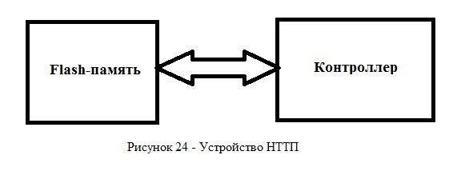
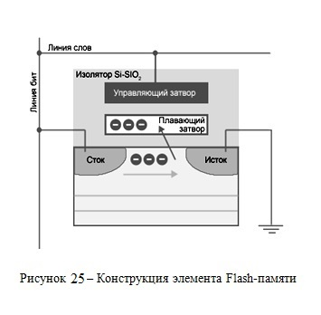
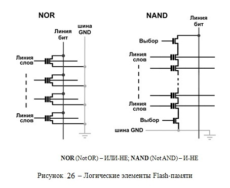
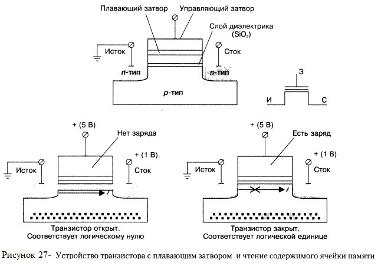
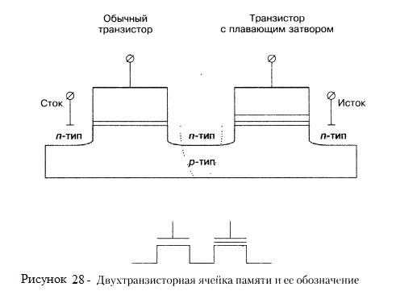
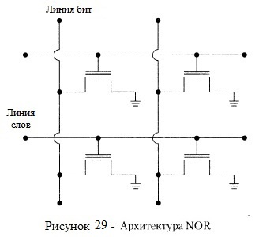
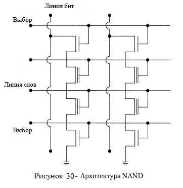

Устройство SSD - накопителей представлено на рисунке 24. Работа и принцип действия контролеера и flash-памяти описаны ниже.
Название «флеш» было придумано в Toshiba Сёдзи Ариидзуми, потому что процесс стирания содержимого памяти ему напомнил фотовспышку (англ. flash).
Элементарной ячейкой хранения данных в современной flash-памяти является транзистор с плавающим затвором (рисунок 25). Важной особенностью таких транзисторов является способность удерживать электроны, то есть заряд. На их основе разработаны и активно эксплуатируются два основных типа flash-памяти: NAND и NOR (рисунок 26).
 Практически все твёрдотельные накопители высокого, среднего и бюджетного класса используют энергонезависимую NAND (flash) память из-за её относительно низкой стоимости, способности сохранять данные без постоянного поддержания питания и возможность реализации технологии сохранения данных при неожиданном отключении питания.
Если на плавающем затворе нет электронов, транзистор ведет себя подобно традиционному КМОП-транзистору (CMOS). При подаче на управляющий затвор положительного напряжения (инициализация ячейки памяти) он будет находиться в открытом состоянии, что соответствует логическому нулю (рисунок 27). Если же на плавающем затворе помещен избыточный отрицательный заряд (электроны), то даже при подаче положительного напряжения на управляющий затвор он компенсирует создаваемое управляющим затвором электрическое поле и не дает образовываться каналу проводимости, то есть транзистор будет находиться в закрытом состоянии.
Таким образом, наличие или отсутствие заряда на плавающем затворе однозначно определяет состояние транзистора (открыт или закрыт) при подаче одного и того же положительного напряжения на управляющий затвор. Если подачу напряжения на управляющий затвор трактовать как инициализацию ячейки памяти, то по напряжению между истоком и стоком можно судить о наличии или отсутствии заряда на плавающем затворе. Получается своеобразная элементарная ячейка памяти, способная сохранять один информационный бит. При этом важно, чтобы заряд на плавающем затворе (если он там имеется) мог сохраняться как угодно долго как при инициализации ячейки памяти, так и при отсутствии напряжения на управляющем затворе. В этом случае ячейка памяти будет энергонезависимой. Осталось лишь придумать, каким образом на плавающий затвор помещать заряд (записывать содержимое ячейки памяти) и удалять его оттуда (стирать содержимое ячейки памяти) в случае необходимости.
Помещение заряда на плавающий затвор (процесс записи) реализуется либо методом инжекции горячих электронов (Channel Hot Electrons, СНЕ), либо методом туннелирования Фаулера — Нордхейма (аналогично тому, как это делается при удалении заряда, — см. далее).
При использовании метода инжекции горячих электронов на сток и управляющий затвор подается высокое напряжение (рисунок 27), чтобы придать электронам в канале энергию, достаточную для преодоления потенциального барьера, создаваемого тонким слоем диэлектрика, и туннелировать в область плавающего затвора (при чтении на управляющий затвор подается меньшее напряжение и эффекта туннелирования не наблюдается).
Для удаления заряда (метод туннелирования) с плавающего затвора (процесс стирания ячейки памяти на управляющий затвор подается высокое (порядка 9 В) отрицательное напряжение, а на область истока — положительное напряжение (рисунок 27). Это приводит к тому, что электроны туннелируют из области плавающего затвора в область истока (квантовое туннелирование Фаулера — Нордхейма (Fowler — Nordheim, FN)).
Рассмотренный транзистор с плавающим затвором может выступать в роли элементарной ячейки flash-памяти. Однако однотранзисторные ячейки имеют ряд существенных недостатков, главный из которых — плохая масштабируемость. Дело в том, что при организации массива памяти каждая ячейка памяти (транзистор) подключается к двум перпендикулярным шинам: управляющие затворы к шине, называемой линией слов, а стоки — к шине, называемой битовой линией (в дальнейшем данная организация будет рассмотрена на примере NOR-архитектуры). Вследствие наличия в схеме высокого напряжения при записи методом инжекции горячих электронов все линии — слов, битов и истоков — необходимо располагать на достаточно большом расстоянии друг от друга для обеспечения требуемого уровня изоляции, что, естественно, сказывается на ограничении объема flash-памяти.
Чтобы избежать недостатков однотранзисторных ячеек памяти, используют различные модификации ячеек памяти, однако главный базовый элемент — транзистор с плавающим затвором — остается в любом варианте ячейки памяти. Одним из модифицированных вариантов ячейки памяти является двухтранзисторная ячейка, содержащая обычный КМОП- гранзистор и транзистор с плавающим затвором (рисунок 28). Обычный транзистор используется для изоляции транзистора с плавающим затвором от битовой линии.
Преимущество двухтранзисторной ячейки памяти заключается в том, что с ее помощью можно создавать более компактные и хорошо масштабируемые микросхемы памяти, поскольку в данном случае транзисторе плавающим затвором изолируется от битовой линии. Кроме того, в отличие от однотранзисторной ячейки памяти, где для записи информации используется метод инжекции горячих электронов, в данном случае и для записи, и для стирания информации применяется метод квантового туннелирования Фаулера — Нордхейма, что позволяет снизить напряжение, необходимое для операции записи. Как будет показано в дальнейшем, двухтранзисторные ячейки используются в памяти с архитектурой NAND.
Flash-память этого типа является родоначальницей всего направления EEPROM (от англ. Electrically Erasable Programmable Read-Only Memory - электрически стираемое перепрограммируемое ПЗУ (ЭСППЗУ), один из видов энергонезависимой памяти (таких как PROM и EPROM). Память такого типа может стираться и заполняться данными до миллиона раз. На сегодняшний день классическая двухтранзисторная технология EEPROM практически полностью вытеснена флеш-памятью типа NOR. Однако название EEPROM прочно закрепилось за сегментом памяти малой ёмкости независимо от технологии). Она была представлена небезызвестной компанией Intel в 1988 году.
Ее структура проста (рисунок 29).
Как уже отмечалось, для инициализации ячейки памяти, то есть для получения доступа к содержимому ячейки, необходимо подать напряжение на управляющий затвор. Поэтому все управляющие затворы должны быть подсоединены к линии управления, называемой линией слов (Word Line). Анализ содержимого ячейки памяти производится по уровню сигнала на стоке транзистора. Поэтому стоки транзисторов подключаются к линии, называемой линией битов (Bit Line).
Своим названием архитектура NOR обязана логической операции «ИЛИ-НЕ» (английская аббревиатура — NOR). Логическая операция NOR над несколькими операндами дает единичное значение, когда все операнды равны нулю, и нулевое значение во всех остальных случаях. Если под операндами понимать значения ячеек памяти, то в рассмотренной архитектуре единичное значение на битовой линии будет наблюдаться только в том случае, когда значение всех ячеек, подключенных к данной битовой линии, равно нулю (все транзисторы закрыты).
Отличительная особенность этого типа памяти в том, что один транзистор хранит 1 бит информации. Хотя в последнее время появились разработки, в которых каждый транзистор способен хранить 2 и даже 4 бита данных.
Архитектура NOR обеспечивает произвольный быстрый доступ к памяти, однако процессы записи (используется метод инжекции горячих электронов) и стирания информации происходят достаточно медленно. Кроме того, в силу технологических особенностей производства микросхем flash-памяти с архитектурой NOR размер самой ячейки получается весьма большим, и поэтому такая память плохо масштабируется.
Применяется NOR в устройствах для хранения программного кода (телефоны, КПК, BIOS персональных компьютеров). Из-за обозначенных выше конструкционных сложностей ее объемы исчисляются единицами мегабайт.
Таким образом недостатками архитектуры NOR являются: медленное стирание данных и плохая масштабируемость памяти, а достоинством - произвольный быстрый доступ к памяти.
Этот тип памяти появился спустя год после NOR. Своим рождением он обязан другому гранду полупроводниковой индустрии — компании Toshiba. Чипы с такой организацией запоминающих ячеек используются в миниатюрных накопителях. Они получили имя NAND, что соответствует логической операции «И-НЕ».
Операция NAND дает нулевое значение только в том случае, когда все операнды равны нулю, и единичное значение во всех остальных случаях. Как мы уже отмечали, нулевое значение соответствует открытому состоянию транзистора, поэтому архитектура NAND подразумевает, что битовая линия имеет нулевое значение в случае, когда все подсоединенные к ней транзисторы открыты, и единичное значение — когда хотя бы один из транзисторов закрыт. Такую архитектуру можно организовать, если подключать транзисторы с битовой линии не по одному (как в архитектуре NOR), а последовательными сериями (рисунок 30).
По сравнению с NOR данная архитектура в силу особенностей технологического процесса производства позволяет добиться более компактного расположения транзисторов, а следовательно, хорошо масштабируется. В отличие от NOR-архитсктуры, где запись информации производится методом инжекции горячих электронов,в архитектуре NAND запись осуществляется методом туннелирования FN, что позволяет реализовать более быструю запись, чем для архитектуры NOR. Чтобы уменьшить негативный эффект низкой скорости чтения, микросхемы NAND снабжаются внутренним кэшем.
К недостаткам NAND следует отнести то, что ячейки группируются в небольшие блоки (по аналогии с кластерами жесткого диска). Поэтому при последовательном чтении и записи преимущество в скорости будет у NAND. Однако, с другой стороны, NAND значительно проигрывает в операциях с произвольным доступом и не позволяет напрямую работать с байтами данных. Если необходимо изменить несколько бит, система вынуждена переписывать весь блок, а это, учитывая ограниченность циклов записи, ведет к повышенному износу ячеек.
Одно из последних новшеств — многослойная структура, предложенная Toshiba. Ячейки будут располагаться слоями, как на стеллажах полки. Это позволит без существенного изменения технологических процессов увеличить количество элементарных ячеек в одном чипе.
Таким образом недостатками архитектуры NAND являются: произвольный доступ к памяти медленне, чем у архитектуры NOR и нельзя напрямую работать с байтами данных, а достоинствами - хорошая масштабируемость памяти и быстрая запись данных.
NAND-флэш является основным и самым дорогостоящим компонентом твердотельного накопителя. Выделим три основных типа памяти, используемых в современных SSD:
Так как 3D NAND является самым распространенным типом памяти в твердотельных накопителях, давайте рассмотрим подробнее её виды и принцип работы.
Тип 3D NAND памяти, используемый в накопителе, напрямую влияет на его эффективность и долговечность. На данный момент в твердотельных накопителях вы можете встретить следующие типы 3D NAND памяти:
Самым главным отличием различных типов 3D NAND памяти является их долговечность. Дабы понять, за счёт чего возникает эта разница, рассмотрим принцип работы 3D NAND памяти.
Большинство производителей SSD накопителей используют энергонезависимую флэш-память NAND при построении своих твердотельных накопителей из-за более низкой стоимости по сравнению с DRAM и способности сохранять данные без постоянного источника питания, обеспечивая сохранность данных за счет внезапных отключений питания. SSD накопители с флэш-памятью работают медленнее, чем решения DRAM, а некоторые ранние разработки были еще медленнее, чем жесткие диски HDD после продолжительного использования. Эта проблема была решена контроллерами, которые вышли в 2009 году. Ниже приведена сравнительная таблица архитектур.
| Сравнительная характеристика | MLC : SLC | NAND : NOR |
|---|---|---|
| Коэффициент стойкости | 1 : 10 | 1 : 10 |
| Соотношение последовательной записи | 1 : 3 | 1 : 4 |
| Соотношение последовательного чтения | 1 : 1 | 1 : 5 |
| Соотношение цен | 1 : 1.3 | 1 : 0.7 |
SSD накопители на основе флэш-памяти обычно упаковываются в стандартные форм-факторы дисковода (1,8, 2,5 и 3,5 дюйма), но также и в более компактные форм-факторы меньшего размера, такие как форм-фактор M.2, что стало возможным благодаря небольшому размеру флэш-памяти.
Более дешевые накопители обычно используют трехуровневую (TLC) или многоуровневую (MLC) флэш-память, которые медленнее и менее надежны, чем одноуровневая (SLC) флэш-память. Но, это может быть смягчено или даже отменено внутренней структурой дизайна SSD, такой как чередование, изменениями в алгоритмах записи, и более высокой избыточной инициализацией, с которой могут работать алгоритмы выравнивания износа.
Ключевыми компонентами SSD-накопителей являются контроллер и память для хранения данных. Изначально, основным компонентом памяти в SSD была микросхем энергозависимой памяти (DRAM), но с 2009 года в основном используется флэш - энергонезависимая память (NAND).
Главной задачей контроллера является обеспечение операций чтения / записи, и управление структурой размещения данных. Основываясь на матрице размещения блоков, в какие ячейки уже проводилась запись, а в какие еще нет, контроллер должен оптимизировать скорость записи и обеспечить максимально длительный срок службы SSD - накопителя. Вследствие особенностей построения NAND-памяти, работать с ее каждой ячейкой отдельно нельзя. Ячейки объединены в страницы объемом по 4 Кбайта, и записать информацию можно только полностью заняв страницу. Стирать данные можно по блокам, которые равны 512 Кбайт. Все эти ограничения накладывают определенные обязанности на правильный интеллектуальный алгоритм работы контроллера. Поэтому, правильно настроенные и оптимизированные алгоритмы контролера могут существенно повысить производительность и долговечность работы SSD - накопителя.
В контроллер входят следующие основные элементы:
Processor – как правило 16 или 32 разрядный микроконтроллер. Выполняет инструкции микропрограммы, отвечает за перемешивание и выравнивание данных на Flash, диагностику SMART, кеширование, безопасность.
Error Correction (ECC) – блок контроля и коррекции ошибок ECC.
Flash Controller – включает адресацию, шину данных и контроль управления микросхемами Flash памяти.
DRAM Controller – адресация, шина данных и управление DDR/DDR2/SDRAM кэш памятью.
I/O interface – отвечает за интерфейс передачи данных на внешние интерфейсы SATA, USB или SAS.
Controller Memory – состоит из ROM памяти и буфера. Память используется процессором для выполнения микропрограммы и как буфер для временного хранения данных. При отсутствии внешней микросхемы RAM памяти выступает в роли единственного буфера данных SSD.
Практически все показатели SSD - накопителя зависят от управляющего контроллёра. Он включает в себя микропроцессор, который управляет всеми процессами памяти с помощью специальной прошивки; и моста между сигналами чипов памяти и шины компьютера (SATA3, USB).
Функции современного SSD - контроллёра:
Все контроллёры памяти нацелены на параллельно подключенную NAND - память. Так как шина памяти одного чипа очень мала (максимум 16 бит), используются шины многих чипов подключенных параллельно. К тому же, отдельно взятый чип отнюдь не обладает отличными характеристиками, а наоборот. Например высокую задержку ввода-вывода. Когда чипы памяти параллельно объединены, эти задержки скрываются, распределяясь между ними. Да и шина растёт пропорционально каждому добавленному чипу, вплоть до максимальной пропускной способности контроллёра.
Многие контроллёры, умеют использовать SATA 6 Гбит/c, что в купе с контроллёрами поддерживающими скорость обмена данными 500 мб/c, даёт ощутимый прирост производительности в чтении / записи и полное раскрытие потенциала SSD накопителя.
{kind=link}
{kind=link}
{kind=link}
{kind=link}
{kind=link}
{kind=link}
{kind=link}
{kind=link}
{kind=link}